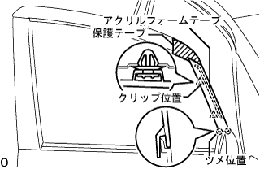
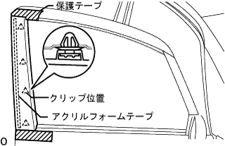

フロントドア ウィンドウ フレーム モールディング RH 取り外し |
| 1. フロントドア ウインドウ フレーム モールディング FR RH取りはずし |
|  |
フロントドアパネルに保護テープを貼る
アクリルフォームテープの接合部およびクリップ2箇所のかん合をはずし、フロントドア ウインドウ フレーム モールディング FR RHを上方に引き抜きながら取りはずす。
| 2. フロントドア ウインドウ フレーム モールディング RR RH取りはずし |
|  |
フロントドアパネルに保護テープを貼る。
アクリルフォームテープの接合部およびクリップ４箇所のかん合をはずし、フロントドア ウインドウ フレーム モールディング RR RHを取りはずす。